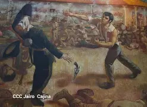

Vigencia Histórica
A 156 años de su tránsito a la inmortalidad, su legado de antifilibusterismo permanece vivo.

Héroe Nacional: El pueblo mismo uniformado defendiendo su autodeterminación.
Basado en fuentes oficiales del Ejército y Gaceta Sandinista.
El Héroe Nacional

Acción de Andrés Castro
Soberanía Nacional
A 156 años de su tránsito a la inmortalidad, su legado de antifilibusterismo permanece vivo.
Cada 16 de marzo, su cuna natal rinde honores a la vida inmortal del General.